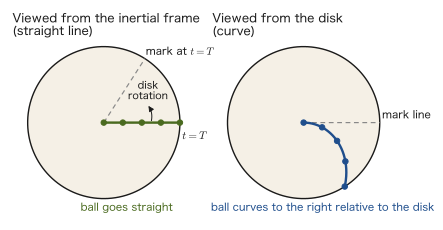
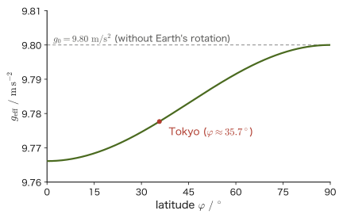

Chapter 9Moving Reference Frames and Fictitious Forces — Centrifugal and Coriolis Forces
When a train brakes suddenly, your body lurches forward. At the moment an elevator starts to rise, you feel momentarily heavier. When you ride a rotating swing ride at an amusement park, you feel a force that seems to pull you outward.
These are all forces that you feel because you are riding in a vehicle that is “accelerating.” Newton's second law, $\bm F=m\bm a$, holds in its original form for an observer who is at rest or in uniform rectilinear motion (the inertial frame of reference you learned about in Chapter 2). Seen by an accelerating observer (a non-inertial frame), however, motion cannot be explained properly unless we add “fictitious forces” that do not actually act.
These fictitious forces are not illusions. The Earth itself is a huge rotating frame that makes one rotation per day, and we are always under its influence. That a scale reads slightly less the closer we are to the equator, that the plane of oscillation of Foucault's pendulum slowly rotates, and that typhoons in the Northern Hemisphere spiral counterclockwise can all be explained by the fictitious forces peculiar to rotating frames—the centrifugal force and the Coriolis force.
In this chapter we first treat the fictitious force (inertial force) in a translationally accelerating frame, then develop the formula for time derivatives in a rotating frame and use it to derive the centrifugal and Coriolis forces. Finally, we look at the phenomena caused by the Earth's rotation and at the correspondence with the acceleration in polar coordinates from Chapter 6. Many of you probably learned in high school physics that “if you ride on an object in circular motion, you see a centrifugal force.” Here we derive it as a vector equation and extend it to general rotational motion that includes the Coriolis force.
- The idea of the “fictitious force” introduced so that Newton's equation of motion holds in a non-inertial frame (an accelerating observer)—what we feel in trains and elevators, and weightlessness in free fall
- The time derivatives of the basis vectors of a rotating frame, and the derivation of the formula $(\dd\bm Q/\dd t)_{\text{inertial}}=(\dd\bm Q/\dd t)_{\text{rotating}}+\bm\omega\times\bm Q$
- The derivation of the centrifugal force $-m\bm\omega\times(\bm\omega\times\bm r)$ and the Coriolis force $-2m\bm\omega\times\bm v$ by applying the formula above twice to the position vector, and an intuitive understanding of the direction and magnitude of each (the Coriolis force points “to the right of the direction of motion”)
- Familiar effects of the Earth's rotation—the dependence of the apparent gravitational acceleration on latitude, the eastward deflection of falling objects, the period of Foucault's pendulum, and the direction in which typhoons spiral
- That the formula for acceleration in polar coordinates, $\bm a=(\ddot r-r\dot\theta^2)\bm e_r+(2\dot r\dot\theta+r\ddot\theta)\bm e_\theta$, learned in Chapter 6, is in fact a special case of the general formula for rotating frames
Related notes: Yasuhide Mochizuki, Physics Notes: Mechanics, p. 27 (heading “Moving Reference Frames”).
9.1 Inertial and Non-Inertial Frames — Fictitious Forces in a Translationally Accelerating Frame
Newton's first law (the law of inertia), which you learned in Chapter 2, states that “a body subject to no external force continues at rest or in uniform rectilinear motion.” An observer (coordinate system) for whom this law holds as it stands is called an inertial frame. A laboratory fixed to the ground may be regarded as an inertial frame to the accuracy of ordinary experiments, because the accelerations due to the Earth's rotation and revolution are very small (the effect of the rotation itself is treated in Section 9.4).
However, at the moment a train brakes suddenly, a passenger holding on to a strap lurches forward. At the moment an elevator starts to rise, the body feels momentarily heavy. These are phenomena that occur because the “observer (coordinate system) itself”—the train or the elevator—has an acceleration. To a person riding in the train, who is at rest, it feels as if some force from somewhere has acted to push that person forward—but to a person watching from outside (from an inertial frame fixed to the ground), no such force exists. The coordinate system called the train has merely decelerated (acquired an acceleration).
Let us consider a simpler example. Place a ball on the smooth floor of a train. When the train starts off with a forward acceleration $A$, then seen from the ground (an inertial frame), no horizontal force acts on the ball, so the ball stays as it is (more precisely, keeps its original velocity) while the floor runs away forward from under it. To a person in the train, however, the ball appears to roll backward with acceleration $A$. If the person in the train wants to keep using Newton's equation of motion $m\times(\text{acceleration})=(\text{force})$, there is no choice but to think that “a backward force $mA$ acted on the ball.”
A coordinate system that has an acceleration relative to an inertial frame is called a non-inertial frame. In a non-inertial frame, the equation of motion no longer works with real forces alone (forces such as universal gravitation, elastic force, normal force, and frictional force, which can be explained as interactions with some other object). So we introduce a hypothetical force—the fictitious force (also called inertial force or pseudo force)—that does not actually exist, but that we add to the equation of motion as if it did, so that everything comes out consistently. In this section we begin with the simplest case, in which the coordinate system does not rotate and has an acceleration only in translation.
Formula 9.1: Newton's equation of motion in a translationally accelerating frame
Let S′ be a coordinate system that translates (without rotating) with acceleration $\bm A(t)$ relative to an inertial frame S. In S′, let $\bm r'$ be the position of a particle (point mass) of mass $m$, $\ddot{\bm r}'$ its acceleration as seen from S′, and $\bm F$ the resultant of the real forces acting on the particle. Then
\begin{equation} m\ddot{\bm r}'=\bm F-m\bm A \label{eq:9-translating-frame} \end{equation}holds. The term $-m\bm A$ on the right-hand side is the fictitious force (Definition 9.1 below). If we regard the real forces plus the fictitious force as the “net force,” then in S′ too we can keep using the familiar form of the equation, $m\times(\text{acceleration seen from S′})=(\text{net force seen from S′})$.
Derivation: Equation of motion in a translationally accelerating frame
Let $\bm R(t)$ be the position vector of the origin O′ of S′ as seen from the origin O of S, $\bm r$ the position vector of the particle P as seen from S, and $\bm r'$ its position vector as seen from S′ (that is, the vector from O′ to P). Then there is the relation
$$ \bm r=\bm R+\bm r' $$Since S′ does not rotate, differentiating the components of $\bm r'$ (that is, $x',y',z'$ measured along the coordinate axes fixed in S′) directly with respect to time gives the velocity and the acceleration (the subtle difference in the rotating case is treated in Section 9.2). Differentiating both sides twice with respect to the time $t$ (in nonrelativistic mechanics, the same time is assumed to flow in S and in S′), we obtain
$$ \ddot{\bm r}=\ddot{\bm R}+\ddot{\bm r}' $$Here $\ddot{\bm R}\equiv\bm A(t)$ is the acceleration, as seen from S, of the origin of S′ (= the train or the elevator itself). Suppose that the real force $\bm F$ (the sum of the forces that can be explained as some kind of interaction, such as gravity and the normal force) acts on the particle P. Since Newton's equation of motion in S (an inertial frame) is $m\ddot{\bm r}=\bm F$, we get
$$ m(\bm A+\ddot{\bm r}')=\bm F \qquad\therefore\quad m\ddot{\bm r}'=\bm F-m\bm A $$The left-hand side $m\ddot{\bm r}'$ is the acceleration of the particle measured by an observer riding in S′, multiplied by the mass. That is, for an observer in S′, the “apparent net force” is the real force $\bm F$ plus the extra term $-m\bm A$.
∎
Definition 9.1: Fictitious force
The unreal, apparent force that is added so that the equation of motion holds in a coordinate system translating with acceleration $\bm A(t)$ relative to an inertial frame (assumed not to rotate),
\begin{equation} \bm F_{\text{fict}}=-m\bm A \label{eq:9-inertial-force-def} \end{equation}is called the fictitious force. The fictitious force acts in the direction opposite to the frame's acceleration $\bm A$, and its magnitude is proportional to the mass. Its unit is $\mathrm{kg\cdot m/s^2}=\mathrm{N}$, the same as for ordinary forces.
Intuition: The fictitious force points opposite to the frame's acceleration
To understand the sign of the fictitious force $-m\bm A$ intuitively, it helps to think, “we feel as if we are left behind in the direction opposite to that in which the frame accelerated.” When a train accelerates forward, the passengers feel pressed backward (the acceleration is forward, the fictitious force is backward). When an elevator accelerates upward, the body feels pressed downward, and the scale reads $N=m(g+A)$, which is larger than the gravitational force $mg$. Conversely, if the elevator's cable snaps and it falls freely, then $\bm A=-g\bm e_z$ (downward, with magnitude $g$) and the fictitious force is $-m\bm A=mg\bm e_z$ (upward, with magnitude $mg$)—it acts in exactly the direction that cancels gravity, so the scale reads $N=0$. This is weightlessness.
Discussion: Properties of fictitious forces, and why they cannot be distinguished from gravity
A fictitious force has three properties that differ from those of ordinary forces. (1) It is proportional to the mass $m$. (2) It has no reaction partner (we cannot point to which object is pushing). (3) It does not exist when viewed from an inertial frame.
Property (1) is especially important. The gravitational force $m\bm g$ is also proportional to the mass, so even if we see an object “fall downward with acceleration $g$” inside a windowless spaceship, there is no experimental way to tell whether (a) we are on a planet and subject to gravity $\bm g$, or (b) the spaceship is accelerating upward with acceleration $g$ in gravity-free space (so that the fictitious force $-m\bm A$ acts downward) (Einstein's elevator). The fact that the mass appearing in the formula for gravity (the gravitational mass) is equal to the mass appearing in the equation of motion $m\bm a=\bm F$ (the inertial mass) is the basis of this indistinguishability. This idea is the starting point of general relativity (the equivalence principle), but it is not treated in this book.
Application: Why are astronauts “weightless”?
Even at the altitude of the International Space Station (ISS), about 400 km above the Earth's surface, the gravitational acceleration is still about $8.7\ \mathrm{m/s^2}$ (about 89% of its value at the surface), so it is not because “there is no gravity” that astronauts float. The ISS orbits the Earth in a circular orbit, and its centripetal acceleration is exactly the gravitational acceleration at that altitude—that is, the ISS (and the astronauts in it) is in a state of continuous free fall, subject to gravity alone. The ISS keeps falling while moving horizontally at a speed of about $7.7\ \mathrm{km/s}$, and because the curve along which it falls exactly matches the curvature of the Earth, it keeps orbiting without hitting the ground. By the same reasoning as for a freely falling elevator, seen from the non-inertial frame fixed to the ISS, a fictitious force that cancels gravity acts, and the apparent weight becomes zero. This is the correct meaning of “weightlessness”; it is not that gravity fails to act because we are in outer space.
Example 9.1: Apparent weight in an accelerating elevator
A person of mass $m=60\ \mathrm{kg}$ is in an elevator that is accelerating upward with acceleration $A=2.0\ \mathrm{m/s^2}$. Find the normal force $N$ that the elevator floor (the scale) exerts on the person. Also find $N$ when the elevator's cable snaps and it falls freely ($A=-g$). Take the gravitational acceleration to be $g=9.8\ \mathrm{m/s^2}$.
Solution. As in Figure 9.1, consider the non-inertial frame fixed to the elevator. Three forces act on the person: the gravitational force $mg$ (downward), the normal force $N$ (upward), and the fictitious force $-mA$ (downward, with magnitude $mA$). Since the person is at rest relative to the elevator, these balance:
$$ N-mg-mA=0 \qquad\therefore\quad N=m(g+A) $$Substituting the numerical values gives
$$ N=60\times(9.8+2.0)=60\times11.8=708\ \mathrm{N} $$(This is larger than the weight at rest, $mg=60\times9.8=588\ \mathrm{N}$, which corresponds to the feeling of becoming “heavier” at the moment the acceleration begins. The unit is $\mathrm{kg\cdot m/s^2}=\mathrm{N}$.) For free fall, substituting $A=-g$ gives
$$ N=m(g+(-g))=0\ \mathrm{N} $$so the person is weightless.
9.2 Time Derivatives in a Rotating Coordinate System
Section 9.1 dealt with the simple case in which the coordinate system merely undergoes translational motion. Next we want to consider rotating coordinate systems—for example, an observer standing on a rotating disk, or the Earth itself (which makes one rotation per day). To prepare for this, let us first check, with a concrete example, how the same motion appears to a rotating observer.
A horizontal disk is rotating counterclockwise at a constant angular velocity $\omega$. A ball is rolled at a constant speed $v$ from the center of this disk toward its rim. Seen from the ground (an inertial frame of reference), the ball is subject to no force, so naturally it moves along a straight line. Seen from a coordinate system fixed on the disk (a person standing on the disk), however, the disk itself keeps rotating while the ball is traveling, so the ball appears to move along a curved trajectory (Figure 9.2).

The same motion looks like a straight line to one observer and like a curve to another. Consequently, the velocity and acceleration of the ball also take different values depending on which observer measures them. In particular, even a point that is at rest on the disk, such as the tip of a rod fixed to the disk, is performing circular motion as seen from an inertial frame and has a velocity. In other words, the change of a vector quantity with time comes in two kinds, “the change seen from an inertial frame” and “the change seen from the rotating frame,” and we need to express the difference between them precisely in an equation. To this end, we first prepare a mathematical tool: what happens when the basis vectors fixed in the rotating frame are differentiated with respect to time.
Caution: On the notation for $\bm\omega$
In this chapter we treat the angular velocity as a vector $\bm\omega$ having a magnitude and a direction (the direction of the axis of rotation, fixed by the right-hand rule). This is a different quantity from the scalar $\omega$ used in Chapter 7 as the angular frequency of simple harmonic motion (for example, $\omega=\sqrt{k/m}$), so please take care not to confuse the two. The magnitude $\omega=\abs{\bm\omega}$ of $\bm\omega$ expresses the magnitude of the angular velocity, “how many radians it rotates per second,” and its direction is along the axis of rotation: $\bm\omega$ points in the positive direction of the axis when the rotation is counterclockwise as seen from the positive direction of that axis (the right-hand rule; this is the same rule by which the direction of the cross product was fixed in University Mathematics, Section 15.3). Also, since $\varphi$ is used for the latitude in Section 9.4, we use $\psi$ for the rotation angle in this section.
Let $\bm e_x,\bm e_y,\bm e_z$ be the orthonormal basis (a set of vectors that are mutually perpendicular and of length 1) fixed in the inertial frame S, and let $\bm e_x',\bm e_y',\bm e_z'$ be the orthonormal basis fixed in the coordinate system S′, which rotates relative to S with angular velocity vector $\bm\omega(t)$. Both are assumed to be right-handed, that is, to satisfy $\bm e_x\times\bm e_y=\bm e_z$ (the right-hand-screw direction). The basis vectors of S′ always have length 1 and always remain at right angles to one another; as a whole they change only their direction, “like a rigid body.”
Theorem 9.1: Relation between time derivatives in a rotating frame
Consider a coordinate system S′ that rotates with angular velocity vector $\bm\omega(t)$ relative to an inertial frame S. For an arbitrary vector $\bm Q(t)$ (any vector quantity whatever, whether a position, a velocity, or a force), the following relation holds between the time derivative seen from S (the inertial-frame derivative) and the time derivative seen by an observer riding on S′ (the rotating-frame derivative, a derivative of the components only):
\begin{equation} \left(\diff{\bm Q}{t}\right)_{\text{inertial}}=\left(\diff{\bm Q}{t}\right)_{\text{rotating}}+\bm\omega\times\bm Q \label{eq:9-rotating-derivative} \end{equation}The second term on the right-hand side, $\bm\omega\times\bm Q$, represents the following effect: even if $\bm Q$ itself is not changing within the rotating frame (even if $(\dd\bm Q/\dd t)_{\text{rotating}}=\bm 0$), the direction of $\bm Q$ appears to change as seen from the inertial frame, because the coordinate system itself is rotating. For example, if $\bm Q=\bm r$ is the position vector of the tip of a rod fixed to the disk, the velocity seen from the inertial frame is $\bm\omega\times\bm r$ (of magnitude $\omega\rho$, where $\rho$ is the distance from the axis of rotation).
Here, “the time derivative seen from the rotating frame” refers to the quantity obtained when an observer riding on S′ expresses $\bm Q$ in components with respect to the basis of S′, $\bm Q=Q_x'\bm e_x'+Q_y'\bm e_y'+Q_z'\bm e_z'$, and differentiates only each component $Q_i'(t)$ with respect to time (for the observer on S′, the $\bm e_i'$ are the observer's own coordinate axes themselves, and they do not seem to change direction). To derive Theorem 9.1, we need the time derivatives of the basis vectors themselves.
Derivation (Part 1): Time derivative of the rotating basis vectors $\dd\bm e_i'/\dd t=\bm\omega\times\bm e_i'$
First consider the concrete case in which the axis of rotation coincides with the $z$ axis ($\bm\omega=\omega\bm e_z$, where $\omega=\dot\psi$ is the time derivative of the rotation angle $\psi(t)$). Then the basis vectors of S′ can be written as
$$ \bm e_x'(t)=\cos\psi\,\bm e_x+\sin\psi\,\bm e_y,\qquad \bm e_y'(t)=-\sin\psi\,\bm e_x+\cos\psi\,\bm e_y,\qquad \bm e_z'=\bm e_z $$(these are exactly the same expressions as those in Chapter 3 and Chapter 6 that gave the polar-coordinate basis vectors $\bm e_r,\bm e_\theta$ in terms of the basis of rectangular (Cartesian) coordinates, with the replacement $\psi\leftrightarrow\theta$). Differentiating with respect to time, we obtain
$$ \dot{\bm e}_x'=\dot\psi(-\sin\psi\,\bm e_x+\cos\psi\,\bm e_y)=\dot\psi\,\bm e_y'=\omega\,\bm e_y' $$ $$ \dot{\bm e}_y'=\dot\psi(-\cos\psi\,\bm e_x-\sin\psi\,\bm e_y)=-\dot\psi\,\bm e_x'=-\omega\,\bm e_x' $$(see Figure 9.3). On the other hand, computing the cross products of $\bm\omega=\omega\bm e_z$ with each basis vector (the relations $\bm e_z\times\bm e_x'=\bm e_y'$, $\bm e_z\times\bm e_y'=-\bm e_x'$, and $\bm e_z\times\bm e_z'=\bm 0$ hold because $\bm e_x',\bm e_y',\bm e_z'$, like $\bm e_x,\bm e_y,\bm e_z$, form a right-handed orthonormal basis), we obtain
$$ \bm\omega\times\bm e_x'=\omega\,\bm e_y',\qquad \bm\omega\times\bm e_y'=-\omega\,\bm e_x',\qquad \bm\omega\times\bm e_z'=\bm 0=\dot{\bm e}_z' $$Thus it has been verified that $\dot{\bm e}_i'=\bm\omega\times\bm e_i'$ holds for all three basis vectors.
Next consider the general case, in which the direction of the axis of rotation may change with time. Here too we show that an “instantaneous angular velocity vector” $\bm\omega(t)$ exists at each instant and that the same equation holds. Write the basis as $\bm e_1',\bm e_2',\bm e_3'$ ($=\bm e_x',\bm e_y',\bm e_z'$). Differentiating with respect to time the condition that the basis is orthogonal and of length 1, $\bm e_i'\cdot\bm e_j'=\delta_{ij}$ (equal to 1 if $i=j$ and to 0 if $i\neq j$), we obtain
$$ \dot{\bm e}_i'\cdot\bm e_j'+\bm e_i'\cdot\dot{\bm e}_j'=0 $$Now let $\Omega_{ij}\equiv\dot{\bm e}_i'\cdot\bm e_j'$. Then the equation above becomes $\Omega_{ij}+\Omega_{ji}=0$, that is, $\Omega_{ji}=-\Omega_{ij}$ (in particular, $\Omega_{ii}=0$ when $i=j$). Since $\Omega_{ij}$ is the coefficient when $\dot{\bm e}_i'$ is expanded in the basis $\bm e_j'$, the only independent components are the three $\Omega_{12},\Omega_{23},\Omega_{31}$; putting $\omega_3\equiv\Omega_{12},\ \omega_1\equiv\Omega_{23},\ \omega_2\equiv\Omega_{31}$, we can write
$$ \dot{\bm e}_1'=\omega_3\bm e_2'-\omega_2\bm e_3',\qquad \dot{\bm e}_2'=-\omega_3\bm e_1'+\omega_1\bm e_3',\qquad \dot{\bm e}_3'=\omega_2\bm e_1'-\omega_1\bm e_2' $$On the other hand, let us compute the cross products of $\bm\omega\equiv\omega_1\bm e_1'+\omega_2\bm e_2'+\omega_3\bm e_3'$ with each basis vector, using relations such as $\bm e_1'\times\bm e_2'=\bm e_3'$. We find $\bm\omega\times\bm e_1'=\omega_2\bm e_2'\times\bm e_1'+\omega_3\bm e_3'\times\bm e_1'=-\omega_2\bm e_3'+\omega_3\bm e_2'$, and similarly $\bm\omega\times\bm e_2'=\omega_1\bm e_3'-\omega_3\bm e_1'$ and $\bm\omega\times\bm e_3'=\omega_2\bm e_1'-\omega_1\bm e_2'$, which agree exactly with the three equations above. Therefore, in general, the following holds:
\begin{equation} \diff{\bm e_i'}{t}=\bm\omega\times\bm e_i' \qquad(i=x,y,z) \label{eq:9-basis-derivative} \end{equation}This $\bm\omega$ is the instantaneous angular velocity vector of S′. Indeed, a vector parallel to $\bm\omega$ does not change its direction at that instant, because $\bm\omega\times\bm\omega=\bm 0$. That is, the direction of $\bm\omega$ is the instantaneous axis of rotation, and its magnitude is the rotation angle per unit time. The case treated earlier, in which the axis is fixed along the $z$ axis, is nothing other than $\bm\omega=\omega\bm e_z$.
∎
Math Tool: Review of the cross product
The definition, the component expression, and the geometric meaning of the cross product $\bm\omega\times\bm e_i'$ appearing on the right-hand side of Eq. \eqref{eq:9-basis-derivative} (its magnitude is the area of a parallelogram, and its direction is fixed by the right-hand rule) are found in University Mathematics, Sections 15.3–15.4. In this chapter we use the cross product as a tool for representing “rotation”—its magnitude $\abs{\bm\omega}\abs{\bm e_i'}\sin90^\circ=\omega$ (when $\bm\omega\perp\bm e_i'$) is the angular velocity itself, and its direction coincides with the direction in which the basis vector actually moves.
Derivation (Part 2): Proof of Theorem 9.1
Express the vector $\bm Q(t)$ in components with respect to the basis of S′:
$$ \bm Q(t)=Q_x'(t)\,\bm e_x'(t)+Q_y'(t)\,\bm e_y'(t)+Q_z'(t)\,\bm e_z'(t) $$The time derivative seen from the inertial frame S (applying the product rule as it stands) is
$$ \left(\diff{\bm Q}{t}\right)_{\text{inertial}} =\underbrace{\dot Q_x'\bm e_x'+\dot Q_y'\bm e_y'+\dot Q_z'\bm e_z'}_{\text{(i)}} +\underbrace{Q_x'\dot{\bm e}_x'+Q_y'\dot{\bm e}_y'+Q_z'\dot{\bm e}_z'}_{\text{(ii)}} $$Term (i) is obtained by differentiating only the components $Q_i'(t)$ with respect to time and multiplying them back onto the same basis vectors $\bm e_i'$; this is precisely “the rate of change of $\bm Q$ measured by an observer riding on S′,” that is, the time derivative seen from the rotating frame, $(\dd\bm Q/\dd t)_{\text{rotating}}$. Substituting $\dot{\bm e}_i'=\bm\omega\times\bm e_i'$ from Eq. \eqref{eq:9-basis-derivative} into term (ii), we obtain
$$ \text{(ii)}=Q_x'(\bm\omega\times\bm e_x')+Q_y'(\bm\omega\times\bm e_y')+Q_z'(\bm\omega\times\bm e_z') =\bm\omega\times(Q_x'\bm e_x'+Q_y'\bm e_y'+Q_z'\bm e_z')=\bm\omega\times\bm Q $$(here we used the distributive law of the cross product—that is, that $\bm\omega\times(\ )$ is a linear operation). Combining the above, Eq. \eqref{eq:9-rotating-derivative} (Theorem 9.1) holds for an arbitrary vector $\bm Q(t)$.
∎
Example 9.2: Velocity of the tip of a rod extending in a rotating frame
A rod extends along the $x'$ axis of a coordinate system S′ that rotates about the $z$ axis with angular velocity $\omega=3.0\ \mathrm{rad/s}$ (constant, counterclockwise); its length is $l(t)=1.0+0.2t\ [\mathrm m]$ ($t$ in seconds). Let $\bm Q=l(t)\,\bm e_x'$ be the vector pointing to the tip of the rod. At $t=0.5\ \mathrm s$, use Theorem 9.1 to find (a) $\dd\bm Q/\dd t$ as seen from the rotating frame, (b) $\bm\omega\times\bm Q$, and (c) the velocity of the tip as seen from the inertial frame and its speed. Then (d) verify the result by differentiating directly in components.
Solution. At $t=0.5\ \mathrm s$, $l=1.0+0.2\times0.5=1.1\ \mathrm m$.
(a) For the observer on S′, the basis vector $\bm e_x'$ does not move and only the component $Q_x'=l(t)$ changes, so
$$ \left(\diff{\bm Q}{t}\right)_{\text{rotating}}=\dot l\,\bm e_x'=0.2\,\bm e_x'\ \mathrm{m/s} $$(b) Since $\bm\omega=3.0\,\bm e_z$ and $\bm e_z\times\bm e_x'=\bm e_y'$,
$$ \bm\omega\times\bm Q=3.0\times1.1\,(\bm e_z\times\bm e_x')=3.3\,\bm e_y'\ \mathrm{m/s} $$(c) By Theorem 9.1 (Eq. \eqref{eq:9-rotating-derivative}), the velocity of the tip as seen from the inertial frame is
$$ \left(\diff{\bm Q}{t}\right)_{\text{inertial}}=0.2\,\bm e_x'+3.3\,\bm e_y'\ \mathrm{m/s} $$and its speed is $\sqrt{0.2^2+3.3^2}=\sqrt{10.93}\approx3.31\ \mathrm{m/s}$ (units: $\dot l$ is in $\mathrm{m/s}$, and $\omega l$ is $\mathrm{rad/s}\times\mathrm m=\mathrm{m/s}$; the radian is dimensionless).
(d) We verify by direct differentiation. Since $\bm Q=l(t)(\cos\omega t,\ \sin\omega t,\ 0)$ (components with respect to $\bm e_x,\bm e_y,\bm e_z$), the product rule gives
$$ \diff{\bm Q}{t}=\dot l\,(\cos\omega t,\ \sin\omega t,\ 0)+l\omega\,(-\sin\omega t,\ \cos\omega t,\ 0) $$Substituting $\omega t=1.5\ \mathrm{rad}$, $\cos1.5\approx0.0707$, and $\sin1.5\approx0.9975$ at $t=0.5\ \mathrm s$, we obtain
$$ 0.2\,(0.0707,\ 0.9975,\ 0)+3.3\,(-0.9975,\ 0.0707,\ 0)\approx(-3.278,\ 0.433,\ 0)\ \mathrm{m/s} $$On the other hand, expressing the result of (c), $0.2\,\bm e_x'+3.3\,\bm e_y'$, in components with $\bm e_x'=(\cos1.5,\sin1.5,0)$ and $\bm e_y'=(-\sin1.5,\cos1.5,0)$ gives the same value, and the speed $\sqrt{3.278^2+0.433^2}\approx3.31\ \mathrm{m/s}$ also agrees. The first term corresponds to the effect of “the rod extending” (the change seen from the rotating frame), and the second term to the effect of “the coordinate system rotating” ($\bm\omega\times\bm Q$).
9.3 Centrifugal and Coriolis Forces
Applying Theorem 9.1 (Eq. \eqref{eq:9-rotating-derivative}) repeatedly to the position vector of a particle gives the equation of motion in a rotating frame—an equation in which, in addition to the real forces, two kinds of apparent forces peculiar to rotation, the centrifugal force and the Coriolis force, appear. Before beginning the derivation, let us get a feel for where these come from, using the example of the disk in Figure 9.2.
Intuition: The acceleration, in the inertial frame, of an object moving outward on a disk
On a disk rotating counterclockwise with angular velocity $\omega$, a point at distance $r$ from the center moves, as seen from the inertial frame, together with the disk in the tangential direction with speed $\omega r$ (this is the $\bm\omega\times\bm r$ stated in the second half of Theorem 9.1). Suppose that an object passes through this point and moves outward relative to the disk with speed $v$. During a short time $\Delta t$, the velocity in the inertial frame changes in the tangential direction for the following two reasons.
(a) The object moves to a point farther out. When the distance changes from $r$ to $r+v\Delta t$, the circumferential speed of the disk at that location increases from $\omega r$ to $\omega(r+v\Delta t)$, so the tangential velocity increases by $\omega v\,\Delta t$. (b) The “direction” of the outward velocity $v$ is turned through the angle $\omega\Delta t$ by the rotation of the disk. When a vector of length $v$ is turned through a small angle $\omega\Delta t$, a change of $v\omega\Delta t$ arises in the tangential direction.
In total, the tangential acceleration in the inertial frame is $\omega v+\omega v=2\omega v$. Although an observer on the disk believes that the object is moving straight outward, in the inertial frame an acceleration $2\omega v$ (in the counterclockwise direction) is occurring. To compensate for this discrepancy when writing the equation of motion, we must add a force of magnitude $2m\omega v$ in the direction opposite to counterclockwise (to the right of the direction of motion). This “2” is the origin of the coefficient of the Coriolis force $-2m\bm\omega\times\bm v$ that appears later. Also, a point at rest relative to the disk performs uniform circular motion of radius $r$ in the inertial frame, so it has an acceleration of magnitude $\omega^2 r$ directed toward the center. What compensates for this is the outward centrifugal force $m\omega^2 r$.
Derivation: Acceleration and the equation of motion in a rotating frame
As in Section 9.1, suppose that the origin O′ of S′ undergoes translational motion with respect to the origin O of the inertial frame S, with position vector $\bm R(t)$ (velocity $\bm V=\dot{\bm R}$, acceleration $\bm A=\ddot{\bm R}$), and that S′ in addition rotates relative to S with angular velocity vector $\bm\omega(t)$. Let $\bm r'$ be the position vector of the particle P as seen from O′; then the position vector of P as seen from S is $\bm r=\bm R+\bm r'$. We define the relative velocity and relative acceleration of P, as measured by an observer riding on S′, to be
$$ \bm v_{\text{rel}}\equiv\left(\diff{\bm r'}{t}\right)_{\text{rotating}},\qquad \bm a_{\text{rel}}\equiv\left(\diff{\bm v_{\text{rel}}}{t}\right)_{\text{rotating}} $$(these are the velocity and acceleration in the ordinary sense, measured with coordinate axes fixed to S′). First, applying Theorem 9.1 (Eq. \eqref{eq:9-rotating-derivative}) to $\bm r'$, the time derivative of $\bm r'$ as seen from S is
$$ \left(\diff{\bm r'}{t}\right)_{\text{inertial}}=\bm v_{\text{rel}}+\bm\omega\times\bm r' $$Therefore, the velocity of P as seen from S is
\begin{equation} \bm v=\dot{\bm r}=\bm V+\bm v_{\text{rel}}+\bm\omega\times\bm r' \label{eq:9-velocity-composition} \end{equation}Next, we differentiate this whole equation with respect to time once more, as seen from S. Using the ordinary product rule for differentiation (which holds regardless of the frame) for each term on the right-hand side, we obtain
$$ \dot{\bm v}=\dot{\bm V}+\left(\diff{\bm v_{\text{rel}}}{t}\right)_{\text{inertial}}+\left(\diff{\bm\omega}{t}\right)_{\text{inertial}}\times\bm r'+\bm\omega\times\left(\diff{\bm r'}{t}\right)_{\text{inertial}} $$Here, $\dot{\bm V}=\bm A$; $\left(\dd\bm\omega/\dd t\right)_{\text{inertial}}=\left(\dd\bm\omega/\dd t\right)_{\text{rotating}}+\bm\omega\times\bm\omega=\dot{\bm\omega}$ (since $\bm\omega\times\bm\omega=\bm 0$, the time derivative of $\bm\omega$ itself is the same whichever frame we view it from; we write it as $\dot{\bm\omega}$); applying Theorem 9.1 to $\bm v_{\text{rel}}$ gives $\left(\dd\bm v_{\text{rel}}/\dd t\right)_{\text{inertial}}=\bm a_{\text{rel}}+\bm\omega\times\bm v_{\text{rel}}$; and further, from the intermediate equation above, $\left(\dd\bm r'/\dd t\right)_{\text{inertial}}=\bm v_{\text{rel}}+\bm\omega\times\bm r'$. Substituting all of these, we obtain
$$ \bm a=\bm A+\left(\bm a_{\text{rel}}+\bm\omega\times\bm v_{\text{rel}}\right)+\dot{\bm\omega}\times\bm r'+\bm\omega\times\left(\bm v_{\text{rel}}+\bm\omega\times\bm r'\right) $$and, noting that the term $\bm\omega\times\bm v_{\text{rel}}$ appears twice, rearranging gives
\begin{equation} \bm a=\bm A+\bm a_{\text{rel}}+2\,\bm\omega\times\bm v_{\text{rel}}+\bm\omega\times(\bm\omega\times\bm r')+\dot{\bm\omega}\times\bm r' \label{eq:9-general-accel} \end{equation}Substituting Eq. \eqref{eq:9-general-accel} into Newton's equation of motion $m\bm a=\bm F$ ($\bm F$ is the sum of the real forces) and solving for $\bm a_{\text{rel}}$ (that is, the acceleration that an observer riding on S′ actually measures), we obtain
\begin{equation} m\bm a_{\text{rel}}=\bm F\ \underbrace{-\,m\bm A}_{\text{translational fictitious force}}\ \underbrace{-\,2m\,\bm\omega\times\bm v_{\text{rel}}}_{\text{Coriolis force}}\ \underbrace{-\,m\bm\omega\times(\bm\omega\times\bm r')}_{\text{centrifugal force}}\ \underbrace{-\,m\dot{\bm\omega}\times\bm r'}_{\text{Euler force}} \label{eq:9-rotating-eom} \end{equation}In addition to the translational fictitious force $-m\bm A$ of Section 9.1, three apparent forces peculiar to rotation have appeared.
The “2” in $2\,\bm\omega\times\bm v_{\text{rel}}$ in Eq. \eqref{eq:9-general-accel} corresponds to (a) and (b) in the “Intuition” above. The first is the effect of $\bm v_{\text{rel}}$ itself changing direction because of the rotation of the frame (the term that arises when Theorem 9.1 is applied to $\bm v_{\text{rel}}$; it corresponds to (b)). The second is the effect that appears inside $\bm\omega\times(\dd\bm r'/\dd t)$: the position $\bm r'$ is carried along by the rotation and so has the velocity $\bm\omega\times\bm r'$, and this $\bm r'$ changes by the amount $\bm v_{\text{rel}}$ (it corresponds to (a)). Since these two have exactly the same magnitude, together they give a factor of 2. In the following Section 9.5, this factor appears once more, as the $2\dot r\dot\theta$ term in the acceleration in polar coordinates.
∎
Caution: About the Euler force
The last term $-m\dot{\bm\omega}\times\bm r'$ of Eq. \eqref{eq:9-rotating-eom} is called the Euler force and appears when the rate of rotation of the frame itself is changing ($\dot{\bm\omega}\neq\bm 0$; for example, when a merry-go-round is speeding up or slowing down). The angular velocity of the Earth's rotation is constant to extremely high accuracy ($\dot{\bm\omega}\approx\bm 0$), so from here on in this chapter we treat only the case where $\bm\omega$ is constant and the origin of the frame does not undergo translational motion ($\bm A=\bm 0$), that is, a purely rotating frame, and focus on the centrifugal force and the Coriolis force. If you want to consider the translational fictitious force and the Euler force, simply return to Eq. \eqref{eq:9-rotating-eom}.
From here on, we consider only a purely rotating frame with a common origin ($\bm A=\bm 0,\ \dot{\bm\omega}=\bm 0$). In this case Eq. \eqref{eq:9-rotating-eom} takes the following form,
\begin{equation} m\bm a_{\text{rel}}=\bm F-2m\,\bm\omega\times\bm v_{\text{rel}}-m\bm\omega\times(\bm\omega\times\bm r) \label{eq:9-rotating-eom-simple} \end{equation}where we have simply written $\bm r$ for $\bm r'$ (the position vector seen from the origin of the rotating frame).
Definition 9.2: Centrifugal and Coriolis forces
The two kinds of fictitious forces peculiar to rotation that are added for a particle (position $\bm r$ seen from the origin of the rotating frame, velocity $\bm v_{\text{rel}}$ seen from the rotating frame) in a frame rotating with (constant) angular velocity vector $\bm\omega$:
\begin{equation} \bm F_{\text{cf}}=-m\,\bm\omega\times(\bm\omega\times\bm r) \label{eq:9-centrifugal-def} \end{equation} \begin{equation} \bm F_{\text{Co}}=-2m\,\bm\omega\times\bm v_{\text{rel}} \label{eq:9-coriolis-def} \end{equation}are called the centrifugal force and the Coriolis force, respectively. Note the difference: the centrifugal force acts even when the particle is at rest relative to the rotating frame (even when $\bm v_{\text{rel}}=\bm 0$), whereas the Coriolis force acts only when the particle is moving relative to the rotating frame ($\bm v_{\text{rel}}\neq\bm 0$). As for units, the centrifugal force is $\mathrm{kg\cdot(rad/s)^2\cdot m}=\mathrm{kg\cdot m/s^2}=\mathrm N$ (rad is dimensionless) and the Coriolis force is $\mathrm{kg\cdot(rad/s)\cdot(m/s)}=\mathrm{kg\cdot m/s^2}=\mathrm N$; both are the same as for ordinary forces.
Derivation: Direction and magnitude of the centrifugal force
Let us find concretely the direction and magnitude of Eq. \eqref{eq:9-centrifugal-def}. To make the calculation as simple as possible, we choose the coordinate axes anew, just for this instant, so that $\bm\omega=\omega\bm e_z$ (the $z$ axis coincides with the axis of rotation), and let the position of the particle be $\bm r=(x,y,z)$. First,
$$ \bm\omega\times\bm r=\omega\bm e_z\times(x\bm e_x+y\bm e_y+z\bm e_z)=\omega(x\,\bm e_z\times\bm e_x+y\,\bm e_z\times\bm e_y)=\omega(x\bm e_y-y\bm e_x) $$(we used $\bm e_z\times\bm e_x=\bm e_y$, $\bm e_z\times\bm e_y=-\bm e_x$, and $\bm e_z\times\bm e_z=\bm 0$). Taking the cross product with $\bm\omega=\omega\bm e_z$ once more, we obtain
$$ \bm\omega\times(\bm\omega\times\bm r)=\omega\bm e_z\times\omega(x\bm e_y-y\bm e_x)=\omega^2(x\,\bm e_z\times\bm e_y-y\,\bm e_z\times\bm e_x)=\omega^2(-x\bm e_x-y\bm e_y)=-\omega^2\bm\rho $$Here $\bm\rho\equiv x\bm e_x+y\bm e_y$ is the vector obtained by projecting $\bm r$ orthogonally onto the plane perpendicular to the axis of rotation (the $z$ axis), that is, “the vector from the axis of rotation to the particle, perpendicular to the axis” (its magnitude $\rho=\sqrt{x^2+y^2}$ is the distance from the axis of rotation. Note that this $\rho$ is different from the radius of curvature $\rho$ in Chapter 3; in this chapter it denotes only the distance from the axis of rotation). Therefore,
\begin{equation} \bm F_{\text{cf}}=-m\bm\omega\times(\bm\omega\times\bm r)=m\omega^2\bm\rho \label{eq:9-centrifugal-result} \end{equation}and we see that the centrifugal force has magnitude $m\omega^2\rho$ ($\rho$ is the distance from the axis of rotation) and is directed from the axis of rotation toward the particle (outward from the axis). Recall that in Chapter 5 the magnitude of the centripetal force in uniform circular motion was $m\omega^2r$ ($r$ is the radius of rotation); the centrifugal force has exactly the same magnitude as that centripetal force and the opposite direction. For an observer riding in the rotating frame and performing uniform circular motion together with the particle, the real centripetal force (such as the tension of a string) and the centrifugal force balance, and the particle appears to be at rest; we see that the centrifugal force is precisely a device that makes the description consistent in this way.
∎
Caution: The centrifugal force is not the reaction to the centripetal force
One sometimes hears the explanation that “the centrifugal force is the reaction to the centripetal force,” but this is wrong. Let us sort this out for the case of a stone tied to a string and swung around. (1) The centripetal force (the tension of the string) is the force with which the string pulls the stone toward the center. Its reaction is the force with which the stone pulls the string outward, and this is a force acting on the string. (2) The centrifugal force is an apparent force that an observer riding in the rotating frame regards as acting on the stone itself, and there is no object to serve as its reaction partner. (3) Seen from the rotating frame (an observer rotating together with the stone), two forces act on the stone, the centripetal force (tension, inward) and the centrifugal force (outward), and they balance, so the stone appears to be at rest. Seen from the inertial frame, the centrifugal force does not exist, and only the centripetal force acts on the stone, which performs circular motion. Action and reaction are “a pair of forces of equal magnitude acting on different bodies,” not a pair of forces acting on the same body and balancing each other.
Theorem 9.2: The Coriolis force points to the right of the direction of motion
In a frame whose angular velocity vector $\bm\omega$ points toward the observer (that is, a frame that rotates counterclockwise as seen by the observer), a particle moving in a plane perpendicular to $\bm\omega$ with velocity $\bm v_{\text{rel}}$ is acted on by a Coriolis force of magnitude $2m\omega v_{\text{rel}}$, perpendicular to the velocity and directed to the right when one faces the direction of motion. If the rotation is reversed (clockwise as seen by the observer), the force points to the left of the direction of motion.
Proof: Theorem 9.2
Place the observer on the $+z$ side (above) and let $\bm\omega=\omega\bm e_z$ ($\omega\gt0$). Writing the velocity in the plane perpendicular to $\bm\omega$ as $\bm v_{\text{rel}}=(v_x,v_y,0)$, we have, from $\bm e_z\times\bm e_x=\bm e_y$ and $\bm e_z\times\bm e_y=-\bm e_x$,
$$ \bm\omega\times\bm v_{\text{rel}}=\omega(v_x\,\bm e_z\times\bm e_x+v_y\,\bm e_z\times\bm e_y)=\omega(-v_y,\ v_x,\ 0) $$Therefore, the Coriolis force of Eq. \eqref{eq:9-coriolis-def} is given by
\begin{equation} \bm F_{\text{Co}}=-2m\,\bm\omega\times\bm v_{\text{rel}}=2m\omega\,(v_y,\ -v_x,\ 0) \label{eq:9-coriolis-plane} \end{equation}Its magnitude is $2m\omega\sqrt{v_x^2+v_y^2}=2m\omega v_{\text{rel}}$. Also, since $(v_x,v_y)\cdot(v_y,-v_x)=0$, we have $\bm F_{\text{Co}}\perp\bm v_{\text{rel}}$. As for the direction, it suffices to check that $(v_x,v_y)\mapsto(v_y,-v_x)$ is the operation of “rotating a vector clockwise by $90^\circ$ in a coordinate plane in which counterclockwise is positive.” For example, east (the $+x$ direction) $(1,0)$ goes to $(0,-1)$ (south), north $(0,1)$ goes to $(1,0)$ (east), west $(-1,0)$ goes to $(0,1)$ (north), and south $(0,-1)$ goes to $(-1,0)$ (west) (Figure 9.5). In every case the force is on the right-hand side as one faces the direction of motion. If $\omega\lt0$ (clockwise), the sign of Eq. \eqref{eq:9-coriolis-plane} is reversed, so the force points to the left.
∎
Intuition: The Coriolis force does no work
The Coriolis force $\bm F_{\text{Co}}=-2m\bm\omega\times\bm v_{\text{rel}}$ always points perpendicular to $\bm v_{\text{rel}}$, by the definition of the cross product. If a force is always perpendicular to the velocity, the work $W=\int\bm F_{\text{Co}}\cdot\dd\bm r$ (Chapter 4) is always zero—the Coriolis force never changes the kinetic energy of a particle; it is a force that changes only the direction of motion. This is the same property as that of the centripetal force in uniform circular motion (Chapter 5), which changes only the direction and not the speed; indeed, the Coriolis force keeps bending the direction of the motion seen in the rotating frame, one step after another—this is the true nature of the typhoon vortices we will see later, and of the phenomenon that a person who tries to walk straight on a rotating disk is bent off course (Figure 9.2).
Application: The centrifuge
A centrifuge (a device that uses centrifugal force to separate components of different densities) spins a sample at high speed to produce an “apparent gravity” (the centrifugal force $m\omega^2\rho$) far greater than ordinary gravity. Even when the radius of rotation $\rho$ is only a few cm, at a rotation rate of several thousand to several tens of thousands of revolutions per minute, $\omega^2\rho$ reaches thousands to hundreds of thousands of times the gravitational acceleration $g$ at the Earth's surface (this ratio is called the relative centrifugal acceleration). The denser a component is, the more strongly it is pushed outward, so centrifuges are widely used in medicine and biochemistry, for example for separating blood cells in blood tests and for purifying DNA and proteins.
Example 9.3: Centrifugal force on a rotating disk
A rotating disk of radius $\rho=2.0\ \mathrm{m}$ rotates at a constant angular velocity $\omega=4.0\ \mathrm{rad/s}$. Find the magnitude of the centrifugal force acting on a small ball of mass $m=0.50\ \mathrm{kg}$ that is fixed to the rim of the disk and rotates with it.
Solution. By Eq. \eqref{eq:9-centrifugal-result}, the magnitude of the centrifugal force is
$$ F_{\text{centrifugal}}=m\omega^2\rho=0.50\times(4.0)^2\times2.0=0.50\times16\times2.0=16\ \mathrm{N} $$(the unit is $\mathrm{kg\cdot(rad/s)^2\cdot m}=\mathrm{kg\cdot m/s^2}=\mathrm N$; the direction is from the axis of rotation toward the ball).
Example 9.4: Coriolis force on a rotating disk
On the same disk as in Example 9.3 ($\omega=4.0\ \mathrm{rad/s}$), a small ball of mass $m=0.50\ \mathrm{kg}$ moves from the center toward the rim with a velocity relative to the disk of $v_{\text{rel}}=1.5\ \mathrm{m/s}$ (radially outward). Find the magnitude and direction of the Coriolis force acting on the ball.
Solution. $\bm\omega$ and $\bm v_{\text{rel}}$ are orthogonal ($\bm\omega$ is perpendicular to the disk, and $\bm v_{\text{rel}}$ is radial, in the plane of the disk), so the cross product in Eq. \eqref{eq:9-coriolis-def} has magnitude $\abs{\bm\omega\times\bm v_{\text{rel}}}=\omega v_{\text{rel}}$, and
$$ F_{\text{Co}}=2m\omega v_{\text{rel}}=2\times0.50\times4.0\times1.5=6.0\ \mathrm{N} $$(the unit is $\mathrm{kg\cdot(rad/s)\cdot(m/s)}=\mathrm N$). For the direction, let $\bm e_x$ be the radially outward direction and $\bm e_y$ the counterclockwise direction perpendicular to it in the plane of the disk, and put $\bm v_{\text{rel}}=1.5\,\bm e_x$. Then Eq. \eqref{eq:9-coriolis-plane} gives $\bm F_{\text{Co}}=2m\omega(v_y,-v_x,0)=2\times0.50\times4.0\times(0,-1.5,0)=(0,-6.0,0)\ \mathrm N$; that is, the force points in the $-\bm e_y$ direction. This is opposite to the direction of rotation (counterclockwise); in other words, it points to the right of the ball's direction of travel (radially outward) (Theorem 9.2).
9.4 The Rotation of the Earth and Everyday Phenomena
The Earth makes one rotation about its axis of rotation, which connects the North and South Poles, in one sidereal day (the period of the Earth's rotation measured relative to the stars; it is slightly shorter than the 24-hour “day” measured relative to the Sun), $T_{\text{day}}\approx23\ \mathrm{h}\,56\ \mathrm{min}\,4\ \mathrm{s}\approx8.6164\times10^4\ \mathrm{s}$. The angular velocity of the Earth's rotation is therefore
$$ \omega_{\text{Earth}}=\frac{2\pi}{T_{\text{day}}}\approx\frac{2\pi}{8.6164\times10^4\ \mathrm{s}}\approx7.292\times10^{-5}\ \mathrm{rad/s} $$and a coordinate system fixed to the Earth's surface is a giant rotating frame that rotates with the angular velocity vector $\bm\omega_{\text{Earth}}$ (of magnitude $\omega_{\text{Earth}}$, directed along the axis of rotation from the South Pole to the North Pole). (Seen from above the North Pole, the Earth turns counterclockwise. By the right-hand rule, $\bm\omega_{\text{Earth}}$ points north, that is, toward the North Star.) The centrifugal force and the Coriolis force of the preceding section always act on objects moving near the Earth's surface. The Earth's radius differs slightly from place to place, but we use the mean radius $R_{\text{Earth}}\approx6.371\times10^6\ \mathrm{m}$.
9.4.1 Local components of the angular velocity vector of the Earth's rotation
Consider an observer standing at a point of latitude $\varphi$ (the equator is $\varphi=0$, and the North and South Poles are $\varphi=\pm90^\circ$). At this point, take a right-handed basis consisting of east $\bm e_{\mathrm E}$, north $\bm e_{\mathrm N}$, and vertically upward $\bm e_z$ ($\bm e_{\mathrm E}\times\bm e_{\mathrm N}=\bm e_z$). The axis of rotation points toward the North Pole; as seen from this point, it lies in the direction at elevation angle $\varphi$ above the northward horizontal line. Therefore, resolving $\bm\omega_{\text{Earth}}$ into the local basis (Figure 9.6), we obtain
\begin{equation} \bm\omega_{\text{Earth}}=\omega_{\text{Earth}}\left(\cos\varphi\,\bm e_{\mathrm N}+\sin\varphi\,\bm e_z\right) \label{eq:9-omega-local} \end{equation}(the vertical component $\Omega_z\equiv\omega_{\text{Earth}}\sin\varphi$ is positive in the Northern Hemisphere and negative in the Southern Hemisphere; at the North Pole $\varphi=90^\circ$ there is only a vertical component, and at the equator only a northward component).
Using this decomposition, let us expand the Coriolis force $-2m\bm\omega_{\text{Earth}}\times\bm v$ into east, north, and vertical components. Write the velocity as $\bm v=(v_{\mathrm E},v_{\mathrm N},v_z)$ in terms of its components along $\bm e_{\mathrm E},\bm e_{\mathrm N},\bm e_z$. Since $\bm\omega_{\text{Earth}}=\omega_{\text{Earth}}(0,\cos\varphi,\sin\varphi)$, the component form of the cross product gives
$$ \bm\omega_{\text{Earth}}\times\bm v=\omega_{\text{Earth}}\bigl(\cos\varphi\,v_z-\sin\varphi\,v_{\mathrm N},\ \ \sin\varphi\,v_{\mathrm E},\ \ -\cos\varphi\,v_{\mathrm E}\bigr) $$Therefore the Coriolis force per unit mass (the Coriolis acceleration) is
\begin{equation} \begin{aligned} a_{\mathrm E}&=2\omega_{\text{Earth}}\left(\sin\varphi\,v_{\mathrm N}-\cos\varphi\,v_z\right),\\ a_{\mathrm N}&=-2\omega_{\text{Earth}}\sin\varphi\,v_{\mathrm E},\\ a_z&=2\omega_{\text{Earth}}\cos\varphi\,v_{\mathrm E} \end{aligned} \label{eq:9-coriolis-local} \end{equation}From this we can read off two things. First, for horizontal motion ($v_z\approx0$), the Coriolis acceleration in the horizontal plane is $(a_{\mathrm E},a_{\mathrm N})=2\Omega_z\,(v_{\mathrm N},-v_{\mathrm E})$, and only the vertical component $\Omega_z=\omega_{\text{Earth}}\sin\varphi$ matters. Since this has the same form as Eq. \eqref{eq:9-coriolis-plane}, the force acts to the right of the velocity in the Northern Hemisphere ($\Omega_z\gt0$) and to the left in the Southern Hemisphere ($\Omega_z\lt0$) (Theorem 9.2). Typhoons and Foucault's pendulum are due to this effect. Second, the component $\omega_{\text{Earth}}\cos\varphi$ produces forces on objects moving east–west or up and down. A falling object ($v_z\lt0$) experiences an eastward force, and an object moving east experiences an upward force. We examine these in Section 9.4.3.
9.4.2 Variation of the apparent gravitational acceleration with latitude
If the Earth is approximated by a sphere of radius $R_{\text{Earth}}$, the distance from the axis of rotation to the point (the distance measured perpendicular to the axis) is $\rho=R_{\text{Earth}}\cos\varphi$ (Figure 9.7). By the result of Section 9.3, the magnitude of the centrifugal force felt by this observer is $m\omega_{\text{Earth}}^2\rho=m\omega_{\text{Earth}}^2R_{\text{Earth}}\cos\varphi$, and its direction is outward from the axis of rotation (that is, obliquely upward relative to the ground, pointing toward the equator).
Derivation: The apparent gravitational acceleration $g_{\text{eff}}(\varphi)$
If the Earth is approximated as a perfect sphere (radius $R_{\text{Earth}}$) with a spherically symmetric density distribution, the true gravitational acceleration $g_0$ has the same magnitude everywhere on the surface and points toward the center of the Earth. The centrifugal acceleration $\omega_{\text{Earth}}^2\rho=\omega_{\text{Earth}}^2R_{\text{Earth}}\cos\varphi$ points perpendicular to the axis of rotation (a direction tilted slightly toward the equator relative to the vertical at the surface). The apparent gravitational acceleration $\bm g_{\text{eff}}$ is the vector sum of the two, and in general it is tilted slightly from the direction toward the center of the Earth (this tilt is used in the very definition of “vertically downward”; the vertical in the geodetic sense refers to this resultant direction).
First we find the magnitude approximately. The centrifugal acceleration is small, at most about 0.3% of the true gravity, so to first-order approximation we need only subtract from $g_0$ the component of the centrifugal acceleration along the vertical (the direction toward the center of the Earth). Since the angle between the vertical and the direction of the centrifugal acceleration is exactly $\varphi$, the vertical component is $\omega_{\text{Earth}}^2R_{\text{Earth}}\cos\varphi\times\cos\varphi=\omega_{\text{Earth}}^2R_{\text{Earth}}\cos^2\varphi$, so that we obtain
\begin{equation} g_{\text{eff}}(\varphi)\approx g_0-\omega_{\text{Earth}}^2R_{\text{Earth}}\cos^2\varphi \label{eq:9-latitude-g} \end{equation}(the unit of the second term on the right-hand side is $\mathrm{(rad/s)^2\cdot m}=\mathrm{m/s^2}$, which agrees with that of an acceleration; the latitude dependence is shown in Figure 9.8). At $\varphi=0^\circ$ (the equator) the decrease is largest, $\omega_{\text{Earth}}^2R_{\text{Earth}}$, and at $\varphi=90^\circ$ (the poles) the decrease is zero (the poles lie on the axis of rotation, so $\rho=0$ and no centrifugal force acts at all).
Next we estimate the tilt. The component of the centrifugal acceleration along the ground surface (the horizontal component) is the component perpendicular to the vertical, namely $\omega_{\text{Earth}}^2R_{\text{Earth}}\cos\varphi\sin\varphi$, and this tilts the direction of the apparent gravity toward the equator. It is largest at $\varphi=45^\circ$, where its value is $\omega_{\text{Earth}}^2R_{\text{Earth}}/2\approx0.017\ \mathrm{m/s^2}$. The tilt angle is only $\omega_{\text{Earth}}^2R_{\text{Earth}}\sin\varphi\cos\varphi/g_0\approx1.7\times10^{-3}\ \mathrm{rad}\approx0.1^\circ$.
∎

Caution: The measured difference in gravitational acceleration between the equator and the poles includes another effect as well
The gravitational acceleration actually measured is, in standard values, roughly $9.780\ \mathrm{m/s^2}$ at the equator and $9.832\ \mathrm{m/s^2}$ at the poles, a difference of about $0.052\ \mathrm{m/s^2}$. On the other hand, the pure centrifugal effect obtained from Eq. \eqref{eq:9-latitude-g} is $\omega_{\text{Earth}}^2R_{\text{Earth}}\approx0.034\ \mathrm{m/s^2}$, which is smaller than the measured difference. The remaining difference (about $0.018\ \mathrm{m/s^2}$) is due to the fact that the Earth is not a perfect sphere but has the shape of an ellipsoid of revolution (an oblate spheroid) that bulges slightly toward the equator owing to the centrifugal effect of the rotation—the Earth's radius at the equator is about 21 km larger than at the poles, and since the equator is farther from the center of the Earth, the gravitational attraction there is weaker. However, because the mass of the equatorial bulge also acts to strengthen the attraction, the net difference in attraction is much smaller than the value estimated from the $1/r^2$ law alone (about $0.065\ \mathrm{m/s^2}$); it is about $0.018\ \mathrm{m/s^2}$ (Clairaut's theorem). In this chapter we have treated only the spherically symmetric approximation, but the very fact that a rotating body cannot remain a perfect sphere is itself one manifestation of the effect of the centrifugal force.
Example 9.5: Decrease in the apparent gravitational acceleration in Tokyo
Taking the latitude of Tokyo to be $\varphi\approx35.7^\circ\mathrm N$, find by how much the apparent gravitational acceleration is reduced from the true gravitational acceleration because of the centrifugal force due to the Earth's rotation. Take $R_{\text{Earth}}=6.371\times10^6\ \mathrm{m}$ and $\omega_{\text{Earth}}=7.292\times10^{-5}\ \mathrm{rad/s}$.
Solution. By Eq. \eqref{eq:9-latitude-g}, the decrease is $\Delta g=\omega_{\text{Earth}}^2R_{\text{Earth}}\cos^2\varphi$. Since $\cos35.7^\circ\approx0.8121$, we have $\cos^2\varphi\approx0.6595$. Also, $\omega_{\text{Earth}}^2\approx(7.292\times10^{-5})^2\approx5.317\times10^{-9}\ \mathrm{s^{-2}}$. Therefore,
$$ \Delta g=5.317\times10^{-9}\times6.371\times10^6\times0.6595\approx0.0223\ \mathrm{m/s^2} $$(this is a decrease of about 0.23% relative to $g_0\approx9.80\ \mathrm{m/s^2}$; the unit is $\mathrm{s^{-2}\cdot m}=\mathrm{m/s^2}$).
9.4.3 Eastward deflection of a falling object
From the $\omega_{\text{Earth}}\cos\varphi$ component in Eq. \eqref{eq:9-coriolis-local}, a somewhat surprising phenomenon follows. If a stone is dropped gently from the top of a tall tower, it lands not directly below but at a place displaced slightly to the east. This is because the eastward component of the Coriolis acceleration, $a_{\mathrm E}=-2\omega_{\text{Earth}}\cos\varphi\,v_z$, points east when $v_z\lt0$ during the fall.
Qualitatively, we can think of it as follows. The top of the tower is farther from the axis of rotation than the ground is, so its eastward speed due to the rotation is slightly greater than that of the ground. The stone falls while roughly keeping that speed, so it outruns the eastward motion of the ground and is displaced to the east. The quantitative value can be found from the Coriolis force, as in the next example.
Example 9.6: Eastward deflection in free fall
An object is released gently from the top of a tower of height $h=100\ \mathrm m$. Neglecting air resistance, find the eastward deviation from the point directly below the release point, at the equator and at Tokyo ($\varphi\approx35.7^\circ\mathrm N$). Take $g=9.8\ \mathrm{m/s^2}$ and $\omega_{\text{Earth}}=7.292\times10^{-5}\ \mathrm{rad/s}$.
Solution. From $h=\tfrac12gt^2$, the fall time is $t=\sqrt{2h/g}=\sqrt{200/9.8}\approx4.52\ \mathrm s$. Since the deviation is small, we take the velocity during the fall to be $v_z\approx-gt$ (vertically downward). Substituting this into the eastward component $a_{\mathrm E}=-2\omega_{\text{Earth}}\cos\varphi\,v_z$ of Eq. \eqref{eq:9-coriolis-local} gives
$$ a_{\mathrm E}=2\omega_{\text{Earth}}g\cos\varphi\,t $$Taking the initial eastward velocity to be zero (the object at the top of the tower moves together with the tower, so it is at rest relative to S′) and integrating twice with respect to time, we obtain
$$ v_{\mathrm E}=\omega_{\text{Earth}}g\cos\varphi\,t^2,\qquad x_{\mathrm E}=\frac13\,\omega_{\text{Earth}}g\cos\varphi\,t^3 $$(the units are $\mathrm{s^{-1}\cdot m/s^2\cdot s^3}=\mathrm m$). Substituting $t^3=4.52^3\approx92.2\ \mathrm{s^3}$ gives
$$ x_{\mathrm E}=\frac13\times7.292\times10^{-5}\times9.8\times92.2\times\cos\varphi\approx2.20\times10^{-2}\cos\varphi\ \mathrm m $$At the equator ($\cos\varphi=1$) the deviation is about $2.2\ \mathrm{cm}$, and at Tokyo ($\cos35.7^\circ\approx0.8121$) it is about $1.8\ \mathrm{cm}$. A northward deviation also arises from $a_{\mathrm N}=-2\omega_{\text{Earth}}\sin\varphi\,v_{\mathrm E}$, but because $v_{\mathrm E}$ is small, this deviation is smaller by roughly two more orders of magnitude and can be neglected. Integrating the equation of motion numerically also gives the same value for Tokyo, $1.78\ \mathrm{cm}$.
Application: The Eötvös effect
The relation $a_z=2\omega_{\text{Earth}}\cos\varphi\,v_{\mathrm E}$ in Eq. \eqref{eq:9-coriolis-local} says that an object moving east experiences an upward acceleration and an object moving west experiences a downward one. For example, for an object moving horizontally eastward at $100\ \mathrm{m/s}$ ($360\ \mathrm{km}$ per hour) at the equator, the apparent weight is reduced by $2\omega_{\text{Earth}}v_{\mathrm E}\approx0.015\ \mathrm{m/s^2}$, that is, by about 0.15% of the gravitational acceleration. This effect is taken into account, as the Eötvös correction, when gravity is measured precisely on ships and aircraft (the correction for gravity measurements).
9.4.4 Foucault's pendulum
In 1851, the French physicist Jean Bernard Léon Foucault suspended a pendulum 67 m long from the ceiling of the Panthéon in Paris and showed in an actual experiment that its plane of oscillation slowly rotates clockwise (in the Northern Hemisphere)—a famous experiment that demonstrated the rotation of the Earth by an experiment on the ground alone, without using any celestial bodies. Why the plane of oscillation of the pendulum appears to rotate can be understood by using the Coriolis force.
Derivation: The period of Foucault's pendulum (outline)
At a point of latitude $\varphi$, take local rectangular coordinates fixed to the ground: an $x$ axis (east) and a $y$ axis (north) in the horizontal plane, and a $z$ axis pointing vertically upward. The motion of the pendulum takes place mainly in the horizontal plane, and its vertical velocity $v_z$ is very small, so from Eq. \eqref{eq:9-coriolis-local} we need to consider only the horizontal Coriolis acceleration, $2\Omega_z(v_y,-v_x)$ with $\Omega_z=\omega_{\text{Earth}}\sin\varphi$ (the term $\omega_{\text{Earth}}\cos\varphi\,v_z$ is neglected). At the North Pole, $\varphi=90^\circ$, we have $\Omega_z=\omega_{\text{Earth}}$, and at the equator, $\varphi=0^\circ$, we have $\Omega_z=0$. Let $x,y$ be the horizontal displacements of the pendulum, and let $\omega_0=\sqrt{g/l}$ be the angular frequency of an ordinary simple pendulum (ignoring the rotation of the Earth; $l$ is the length of the pendulum, and this is the result for the simple pendulum in Chapter 7). Then the equations of motion, obtained by adding the horizontal components of the Coriolis force to the restoring force, are
$$ \ddot x=-\omega_0^2x+2\Omega_z\dot y,\qquad \ddot y=-\omega_0^2y-2\Omega_z\dot x $$Introducing the complex number $\zeta\equiv x+iy$ (the same complex-number technique as when we solved the forced oscillation in Chapter 7) and combining the two equations, we obtain
$$ \ddot\zeta+2i\Omega_z\dot\zeta+\omega_0^2\zeta=0 $$This is a single differential equation for a complex variable (verify that $\ddot x+i\ddot y=-\omega_0^2(x+iy)+2\Omega_z(\dot y-i\dot x)=-\omega_0^2\zeta-2i\Omega_z(\dot x+i\dot y)=-\omega_0^2\zeta-2i\Omega_z\dot\zeta$). It can be solved by the same characteristic-equation method as in Chapter 7 (substitute $\zeta=e^{\lambda t}$), and the roots of the characteristic equation $\lambda^2+2i\Omega_z\lambda+\omega_0^2=0$ are $\lambda=-i\Omega_z\pm i\sqrt{\Omega_z^2+\omega_0^2}$. The period of the pendulum is a few seconds to over ten seconds (for the Panthéon, with $l=67\ \mathrm m$, $2\pi/\omega_0\approx16\ \mathrm s$ and $\omega_0\approx0.38\ \mathrm{rad/s}$), whereas the rotation of the Earth is far slower, $\omega_{\text{Earth}}\approx7\times10^{-5}\ \mathrm{rad/s}$, so that $\Omega_z\ll\omega_0$ ($\Omega_z/\omega_0\lt10^{-3}$). Approximating $\sqrt{\Omega_z^2+\omega_0^2}\approx\omega_0$, the general solution takes the form
$$ \zeta(t)\approx e^{-i\Omega_zt}\left(C_1e^{i\omega_0t}+C_2e^{-i\omega_0t}\right) $$(where $C_1,C_2$ are complex constants). If the pendulum is displaced along the $x$ axis and released gently ($\zeta=x_0$ and $\dot\zeta=0$ at $t=0$), then $C_1=\tfrac{x_0}2(1+\Omega_z/\omega)$ and $C_2=\tfrac{x_0}2(1-\Omega_z/\omega)$ (with $\omega=\sqrt{\Omega_z^2+\omega_0^2}$), so that $C_1\approx C_2$ (the difference is of order $\Omega_z/\omega_0$). When $C_2=C_1^*$, the expression in the parentheses becomes the real number $2\mathrm{Re}(C_1e^{i\omega_0t})$, which represents the oscillation of an ordinary simple pendulum in which the Coriolis force is ignored (a back-and-forth linear motion in a fixed direction). The factor $e^{-i\Omega_zt}$ multiplying it is nothing other than the operation of rotating everything by an angle $-\Omega_zt$ in the complex plane. That is, the plane of oscillation of the pendulum (the direction of the linear back-and-forth motion) rotates slowly with angular velocity $\Omega_z=\omega_{\text{Earth}}\sin\varphi$ (clockwise in the Northern Hemisphere). The time required for the plane of oscillation to make one revolution is
\begin{equation} T_{\text{F}}=\frac{2\pi}{\Omega_z}=\frac{T_{\text{day}}}{\sin\varphi} \label{eq:9-foucault-period} \end{equation}In other words, this time is the period of Foucault's pendulum.
∎
Example 9.7: The period of Foucault's pendulum
When Foucault's pendulum is installed in Tokyo (latitude $\varphi\approx35.7^\circ\mathrm N$), find the time required for its plane of oscillation to make one revolution. Also compare it with the value at Paris (latitude $\varphi\approx48.86^\circ\mathrm N$), where Foucault performed his experiment. Take $T_{\text{day}}=8.6164\times10^4\ \mathrm s$ (23 hours 56 minutes 4 seconds).
Solution. By Eq. \eqref{eq:9-foucault-period}, since $\sin35.7^\circ\approx0.58354$ in Tokyo,
$$ T_{\text{F}}=\frac{8.6164\times10^4}{0.58354}\approx1.4766\times10^5\ \mathrm s\approx41.0\ \mathrm{hours} $$In Paris, $\sin48.86^\circ\approx0.75310$, so
$$ T_{\text{F}}=\frac{8.6164\times10^4}{0.75310}\approx1.1441\times10^5\ \mathrm s\approx31.8\ \mathrm{hours} $$The higher the latitude, the larger the vertical component $\Omega_z=\omega_{\text{Earth}}\sin\varphi$, so the plane of oscillation rotates faster and the period is shorter (at the pole $T_{\text{F}}=T_{\text{day}}$, and at the equator the plane of oscillation does not rotate at all). The period in Paris is about 32 hours (the theoretical value $23.93\ \mathrm{hours}\div\sin48.86^\circ$), which agrees with the well-known value that Foucault's pendulum turns its plane of oscillation by about $270^\circ$ per day.
9.4.5 The direction of the vortex in a typhoon (low-pressure system)
Around a place of low atmospheric pressure (a low-pressure system), the surrounding air tends to flow from the higher-pressure side toward the lower-pressure side (the pressure-gradient force). If the Earth were not rotating, the wind would blow straight into the center of the low. In reality, however, the Coriolis force acts on the moving air. In the Northern Hemisphere, as stated in Theorem 9.2, the Coriolis force acts on a moving object to the right of its direction of motion, so the wind trying to flow toward the center is bent to the right one step after another (Figure 9.9).
Where does the continually bent wind settle down? If the wind blows in a direction in which the pressure-gradient force toward the center balances the Coriolis force acting to the right of the wind's direction of motion, the wind bends no further. To balance a force pointing toward the center, the Coriolis force must point outward. In the Northern Hemisphere, the right-hand side of the direction of motion is the outside when the wind goes around the low with the low on its left-hand side, that is, when it goes around counterclockwise. The wind in this state is called the geostrophic wind, and it blows counterclockwise around the low along the isobars. In an actual low-pressure system, friction at the ground weakens the wind, so the Coriolis force becomes smaller, the pressure-gradient force somewhat prevails, and the wind has an inward component across the isobars. As a result, overall the wind blows into the center while spiraling counterclockwise. This is why the clouds of large-scale low-pressure systems in the Northern Hemisphere, such as typhoons and extratropical cyclones, form counterclockwise vortices almost without exception. In the Southern Hemisphere the direction of the Coriolis force is reversed (to the left of the direction of motion), so low-pressure systems spiral clockwise.
Here is one rough numerical figure. When a wind of $v=30\ \mathrm{m/s}$ blows at latitude $\varphi=30^\circ$, the Coriolis acceleration is $2\omega_{\text{Earth}}\sin\varphi\,v=2\times7.292\times10^{-5}\times0.5\times30\approx2.2\times10^{-3}\ \mathrm{m/s^2}$. If the density of air is $1.2\ \mathrm{kg/m^3}$, the pressure-gradient force that balances this corresponds to a pressure changing at the rate $1.2\times2.2\times10^{-3}\approx2.6\times10^{-3}\ \mathrm{Pa/m}$, that is, about $2.6\ \mathrm{hPa}$ per $100\ \mathrm{km}$. Note that for flows with sharp curvature, such as near the center of a typhoon, the effect of the centrifugal force is added as well (the gradient wind).
Caution: The vortex of draining bath water has nothing to do with the Coriolis force
One often hears the popular belief that “the direction of the vortex when the plug is pulled from a bathtub is also fixed, differently in the Northern and Southern Hemispheres,” but this is false. In phenomena on the scale of hundreds of kilometers and several days, such as a typhoon, the Coriolis force (of magnitude $2m\omega_{\text{Earth}}v$) becomes comparable in size to the pressure-gradient force and cannot be neglected. For the draining of a bathtub (a scale of tens of centimeters and tens of seconds), however, the Coriolis force is smaller by orders of magnitude than the asymmetries due to the slight initial swirling motion of the water, the shape of the container, and the way the plug is pulled, and the actual direction of the vortex is determined almost entirely by such accidental initial conditions. The Coriolis force dominates only in phenomena whose spatial and temporal scales of motion are sufficiently large (large-scale flows of the atmosphere and oceans). The direction of small-scale vortices such as tornadoes is likewise not determined by the Coriolis force.
9.5 Correspondence with the Acceleration in Polar Coordinates
In Chapter 6 we learned that, when the acceleration of a particle moving in a plane is decomposed into polar components, it is given by
$$ \bm a=(\ddot r-r\dot\theta^2)\,\bm e_r+(2\dot r\dot\theta+r\ddot\theta)\,\bm e_\theta $$The term $-r\dot\theta^2$ and the term $2\dot r\dot\theta$ in this expression actually have exactly the same mathematical origin as the centrifugal-force and Coriolis-force terms derived in this chapter—let us verify this.
Intuition: The polar basis vectors $\bm e_r,\bm e_\theta$ are also a “rotating frame”
The polar basis vectors $\bm e_r,\bm e_\theta$ keep changing direction in step with the particle's angle $\theta(t)$—in other words, they are themselves a coordinate system rotating with angular velocity $\bm\omega=\dot\theta\bm e_z$ (it is no coincidence that the argument about the basis vectors of a rotating frame in Section 9.2 and the calculation used to find the polar basis vectors in Chapter 3 and Chapter 6 are identical at the level of the equations). In the polar case, however, the particle itself always lies along the radial direction (the $x'$ axis) of this rotating frame—that is, the position of the particle relative to the origin of the rotating frame always has the special form $\bm r'=r\bm e_r$ (the $\theta$ component is always 0).
Derivation: Recovering the polar-coordinate formula of Chapter 6 from the general formula of this chapter
Let the position of the particle be $\bm r'=r(t)\bm e_r$, and use Eq. \eqref{eq:9-general-accel} in the rotating frame with angular velocity $\bm\omega=\dot\theta\bm e_z$ (the origin of the rotating frame is held fixed, that is, $\bm A=\bm 0$; in this case it suffices to compute the motion of the particle itself relative to this rotating frame, as $\bm v_{\text{rel}},\bm a_{\text{rel}}$). Since the particle always moves only in the radial direction within the rotating frame,
$$ \bm v_{\text{rel}}=\dot r\,\bm e_r,\qquad \bm a_{\text{rel}}=\ddot r\,\bm e_r $$(to an observer riding in the rotating frame, the particle appears simply to move one-dimensionally along the $x'$ axis). Also, $\dot{\bm\omega}=\ddot\theta\bm e_z$. We now compute each term of Eq. \eqref{eq:9-general-accel} (with $\bm A=\bm 0$). First, by the same calculation as in the derivation of Eq. \eqref{eq:9-centrifugal-result} (with $\bm\omega=\dot\theta\bm e_z$ and $\bm r'=r\bm e_r$, and since $\bm e_r$ is a unit vector perpendicular to the axis of rotation $\bm e_z$, we have $\bm\rho=r\bm e_r$ itself), we obtain
$$ \bm\omega\times(\bm\omega\times\bm r')=-\dot\theta^2\,r\bm e_r $$Next, using $\bm e_z\times\bm e_r=\bm e_\theta$ (which holds because the polar basis is also an orthogonal right-handed system), we obtain
$$ 2\,\bm\omega\times\bm v_{\text{rel}}=2\dot\theta\bm e_z\times\dot r\bm e_r=2\dot r\dot\theta\,\bm e_\theta, \qquad \dot{\bm\omega}\times\bm r'=\ddot\theta\bm e_z\times r\bm e_r=r\ddot\theta\,\bm e_\theta $$Substituting all of these into Eq. \eqref{eq:9-general-accel}, we get
$$ \bm a=\bm a_{\text{rel}}+2\,\bm\omega\times\bm v_{\text{rel}}+\bm\omega\times(\bm\omega\times\bm r')+\dot{\bm\omega}\times\bm r' =\ddot r\bm e_r-\dot\theta^2r\bm e_r+2\dot r\dot\theta\bm e_\theta+r\ddot\theta\bm e_\theta $$That is,
\begin{equation} \bm a=(\ddot r-r\dot\theta^2)\,\bm e_r+(2\dot r\dot\theta+r\ddot\theta)\,\bm e_\theta \label{eq:9-polar-correspondence} \end{equation}and we have obtained exactly the same expression as the polar-coordinate acceleration formula of Chapter 6. The terms correspond as follows: $\ddot r\bm e_r=\bm a_{\text{rel}}$, $-r\dot\theta^2\bm e_r=\bm\omega\times(\bm\omega\times\bm r')$ (the centrifugal-force term), $2\dot r\dot\theta\bm e_\theta=2\bm\omega\times\bm v_{\text{rel}}$ (the Coriolis-force term), and $r\ddot\theta\bm e_\theta=\dot{\bm\omega}\times\bm r'$ (the Euler-force term).
∎
Intuition: Why did the words “centrifugal force” and “Coriolis force” never appear in polar coordinates?
In Chapter 6, the expression $\bm a=(\ddot r-r\dot\theta^2)\bm e_r+(2\dot r\dot\theta+r\ddot\theta)\bm e_\theta$ was merely a statement, in polar components, of the true acceleration of the particle as seen from an inertial frame (an ordinary stationary observer); nothing at all was said about forces. The equation of motion remained $m\bm a=\bm F$ ($\bm F$ being a real force), and terms such as $-mr\dot\theta^2$ and $2m\dot r\dot\theta$ are merely terms arising in the calculation of the acceleration, appearing on the left-hand side of the equation of motion (inside $m\bm a$). By contrast, what we called the “centrifugal force” and the “Coriolis force” in this chapter are the quantities obtained by moving these terms to the right-hand side of the equation of motion and treating them as if they were new forces. If the acceleration terms $-r\dot\theta^2\bm e_r$ and $+2\dot r\dot\theta\bm e_\theta$ are moved to the right-hand side with their signs reversed, they become the centrifugal force $+mr\dot\theta^2\bm e_r$ (outward) and the Coriolis force $-2m\dot r\dot\theta\bm e_\theta$. As equations, this is merely the transposition of the same terms—the difference between “is this a real force, or merely an apparent term in the calculation?” is nothing more than a difference in standpoint: in which frame (an inertial frame or a rotating frame) we write the equation of motion. Once you notice this correspondence, you will see that the polar-coordinate calculation of Chapter 6 and the rotating-frame calculation of this chapter have in fact been doing the same mathematics from the very beginning.
Example 9.8: Checking the correspondence for a specific trajectory
For a particle moving with $r(t)=2+0.5t\ [\mathrm m]$ and $\theta(t)=1.2t+0.3t^2\ [\mathrm{rad}]$ ($t$ in seconds), compute the acceleration at $t=1\ \mathrm s$ by both (a) the polar-coordinate formula of Chapter 6, $\bm a=(\ddot r-r\dot\theta^2)\bm e_r+(2\dot r\dot\theta+r\ddot\theta)\bm e_\theta$, and (b) the general formula for a rotating frame from this chapter, $\bm a=\bm a_{\text{rel}}+2\bm\omega\times\bm v_{\text{rel}}+\bm\omega\times(\bm\omega\times\bm r')+\dot{\bm\omega}\times\bm r'$ ($\bm\omega=\dot\theta\bm e_z$), and confirm that they agree.
Solution. $\dot r=0.5,\ \ddot r=0$, $\dot\theta=1.2+0.6t,\ \ddot\theta=0.6$. At $t=1$, $r=2+0.5=2.5\ \mathrm m$, $\dot\theta=1.8\ \mathrm{rad/s}$, $\ddot\theta=0.6\ \mathrm{rad/s^2}$.
(a) Polar-coordinate formula:
$$ a_r=\ddot r-r\dot\theta^2=0-2.5\times1.8^2=-2.5\times3.24=-8.1\ \mathrm{m/s^2} $$ $$ a_\theta=2\dot r\dot\theta+r\ddot\theta=2\times0.5\times1.8+2.5\times0.6=1.8+1.5=3.3\ \mathrm{m/s^2} $$(b) Rotating-frame formula: $\bm r'=2.5\bm e_r$, $\bm v_{\text{rel}}=0.5\bm e_r$, $\bm a_{\text{rel}}=\bm 0$, $\bm\omega=1.8\bm e_z$, $\dot{\bm\omega}=0.6\bm e_z$.
$$ \bm\omega\times(\bm\omega\times\bm r')=-1.8^2\times2.5\,\bm e_r=-8.1\,\bm e_r,\qquad 2\bm\omega\times\bm v_{\text{rel}}=2\times1.8\times0.5\,\bm e_\theta=1.8\,\bm e_\theta,\qquad \dot{\bm\omega}\times\bm r'=0.6\times2.5\,\bm e_\theta=1.5\,\bm e_\theta $$Hence $\bm a=\bm 0-8.1\bm e_r+1.8\bm e_\theta+1.5\bm e_\theta=-8.1\bm e_r+3.3\bm e_\theta$. The results of (a) and (b), $a_r=-8.1\ \mathrm{m/s^2}$ and $a_\theta=3.3\ \mathrm{m/s^2}$, agree exactly. Of the $3.3=1.8+1.5$ in $a_\theta$, the 1.8 is the Coriolis-force term and the 1.5 is the Euler-force term (which appears because $\dot\theta$ is changing).
9.6 Summary and Exercises
9.6.1 Summary
- In a coordinate system translating with acceleration $\bm A$ relative to an inertial frame, adding the fictitious force $-m\bm A$ (Definition 9.1) to the real force $\bm F$ makes the equation of motion $m\ddot{\bm r}'=\bm F-m\bm A$ (Formula 9.1) hold in its familiar form. This explains the change in apparent weight in trains and elevators, and weightlessness in free fall and in orbit.
- The basis vectors of a coordinate system rotating with angular velocity vector $\bm\omega$ satisfy $\dd\bm e_i'/\dd t=\bm\omega\times\bm e_i'$, and from this, for any vector, $(\dd\bm Q/\dd t)_{\text{inertial}}=(\dd\bm Q/\dd t)_{\text{rotating}}+\bm\omega\times\bm Q$ (Theorem 9.1) holds.
- Applying this twice to the position vector, we find that the equation of motion in a rotating frame ($\bm\omega$ constant, origin fixed) becomes $m\bm a_{\text{rel}}=\bm F-2m\bm\omega\times\bm v_{\text{rel}}-m\bm\omega\times(\bm\omega\times\bm r)$, in which appear the centrifugal force $-m\bm\omega\times(\bm\omega\times\bm r)$ (of magnitude $m\omega^2\rho$, directed outward from the axis; it is not the reaction to the centripetal force) and the Coriolis force $-2m\bm\omega\times\bm v_{\text{rel}}$ (it is perpendicular to the velocity and does no work; in a counterclockwise-rotating frame it points to the right of the direction of motion, Theorem 9.2) (Definition 9.2).
- The local components of the Earth's rotation ($\omega_{\text{Earth}}\approx7.292\times10^{-5}\ \mathrm{rad/s}$) are $\bm\omega_{\text{Earth}}=\omega_{\text{Earth}}(\cos\varphi\,\bm e_{\mathrm N}+\sin\varphi\,\bm e_z)$. This lies behind familiar phenomena such as the dependence of the apparent gravitational acceleration on latitude ($g_{\text{eff}}\approx g_0-\omega_{\text{Earth}}^2R_{\text{Earth}}\cos^2\varphi$), the eastward deflection of falling objects, the period of Foucault's pendulum ($T_{\text{F}}=T_{\text{day}}/\sin\varphi$), and the sense of the vortex of a typhoon (counterclockwise in the Northern Hemisphere).
- The polar-coordinate acceleration formula of Chapter 6, $\bm a=(\ddot r-r\dot\theta^2)\bm e_r+(2\dot r\dot\theta+r\ddot\theta)\bm e_\theta$, can be recovered as a special case of the general formula of this chapter once we notice that the polar basis $\bm e_r,\bm e_\theta$ is itself a coordinate system rotating with angular velocity $\dot\theta$.
9.6.2 Exercises
Exercise 9.1: A hanging strap in a train braking suddenly
A train is decelerating horizontally, with the magnitude of its acceleration constant at $a=3.0\ \mathrm{m/s^2}$. A strap (mass $m$) that had been hanging vertically from the ceiling is at rest relative to the train, in equilibrium, tilted from the vertical by an angle $\alpha$. Express $\alpha$ in terms of $a,g$, and find its numerical value for $g=9.8\ \mathrm{m/s^2}$.
Hint: Work in the non-inertial frame fixed to the train. The acceleration of the frame (the train) points opposite to the direction of travel and has magnitude $a$, so the fictitious force has magnitude $ma$ and points in the direction of travel (forward). The strap is in equilibrium under the gravitational force $mg$ (downward), the tension $T$ (along the string), and this fictitious force. Write the force-balance equations in the vertical and horizontal directions and find $\tan\alpha$.
Exercise 9.2: The water surface in a rotating bucket
Water is placed in a cylindrical bucket of radius $a=0.15\ \mathrm m$, and the bucket is kept rotating about its vertical central axis at a constant angular velocity $\omega$. Eventually the water rotates together with the bucket, and the water surface comes to rest in a concave shape symmetric about the axis. (1) Find the height $z(\rho)$ of the water surface as a function of the distance $\rho$ from the axis of rotation (let the height at $\rho=0$ be $z_0$). (2) For 60 revolutions per minute ($60\ \mathrm{rpm}$), find the difference in height of the water surface between the rim of the bucket and the center. Take $g=9.8\ \mathrm{m/s^2}$.
Hint: In the frame rotating with the bucket, the water is at rest. The resultant of gravity and the centrifugal force acting on a small element of water at the surface (the pressure exerts no force along the surface) must be perpendicular to the water surface. Find the slope $\dd z/\dd\rho$ of the surface from this condition and integrate.
Exercise 9.3: A bead sliding along a rotating rod
A thin, smooth, horizontal rod rotates in a horizontal plane at a constant angular velocity $\omega=2.0\ \mathrm{rad/s}$ about a vertical axis through one end O. A bead of mass $m$ threaded on the rod slides smoothly along it. At time $t=0$, the bead was at rest relative to the rod at a position $r_0=0.10\ \mathrm m$ from O. (1) In the rotating frame fixed to the rod, set up and solve the equation of motion for the distance $r(t)$ along the rod. (2) Find the time at which the bead reaches a position $1.0\ \mathrm m$ from O. (3) Express the horizontal force $N$ exerted by the rod on the bead, perpendicular to the rod, in terms of $m,\omega,\dot r$. (4) In an inertial frame, verify (1) and (3) using the polar-coordinate acceleration of Chapter 6.
Hint: The only fictitious force along the rod is the centrifugal force. The Coriolis force is perpendicular to the rod, and since the rod is smooth, the rod exerts a normal force on the bead in the direction perpendicular to the rod. The definition of $\cosh$ is $\cosh x=(e^x+e^{-x})/2$, and $\cosh^{-1}10=\ln(10+\sqrt{99})\approx2.993$.
Exercise 9.4: The speed at which the centrifugal and Coriolis forces become equal on a merry-go-round
A merry-go-round of radius $\rho=3.0\ \mathrm m$ makes one revolution per period $T=8.0\ \mathrm s$. (1) Find the magnitude of the centrifugal force acting on a child of mass $m=25\ \mathrm{kg}$ sitting at the rim of the merry-go-round. (2) When this child, passing through the rim position, moves outward relative to the merry-go-round with speed $v$, find the value of $v$ at which the magnitudes of the centrifugal force and the Coriolis force are equal.
Hint: Find the angular velocity $\omega=2\pi/T$ from the period $T$, and for (1) substitute it into Eq. \eqref{eq:9-centrifugal-result}, $F_{\text{cf}}=m\omega^2\rho$. For (2), solve $m\omega^2\rho=2m\omega v$ for $v$.
Exercise 9.5: Direction of the Coriolis force on an object moving north in the Northern Hemisphere
At a point in the Northern Hemisphere, consider an object of mass $m$ moving due north along the Earth's surface with speed $v$. Taking the vertical component of the angular velocity vector of the Earth's rotation at that point to be $\Omega_z=\omega_{\text{Earth}}\sin\varphi>0$ (vertically upward), find the horizontal direction of the Coriolis force acting on this object.
Hint: Take a local coordinate system with vertically upward as $\bm e_z$, north as $\bm e_y$, and east as $\bm e_x$, and compute $\bm F_{\text{Co}}=-2m\bm\omega\times\bm v_{\text{rel}}$ in components with $\bm\omega\approx\Omega_z\bm e_z$ (the approximation of Section 9.4.1 that only the vertical component matters for motion in a horizontal plane) and $\bm v_{\text{rel}}=v\bm e_y$.
Exercise 9.6: Difference in apparent gravitational acceleration between the equator and the pole
Using Eq. \eqref{eq:9-latitude-g}, find the difference $g_{\text{eff}}(0^\circ)-g_{\text{eff}}(90^\circ)$ between the apparent gravitational accelerations at the equator ($\varphi=0^\circ$) and the North Pole ($\varphi=90^\circ$), considering only the effect of the centrifugal force. Take $R_{\text{Earth}}=6.371\times10^6\ \mathrm m$ and $\omega_{\text{Earth}}=7.292\times10^{-5}\ \mathrm{rad/s}$.
Hint: Note that $g_0$ cancels in the difference, and that $\cos0^\circ=1$ and $\cos90^\circ=0$. Also recall the Caution in Section 9.4.2 (on the discrepancy with the measured difference).
Exercise 9.7: Eastward deflection of a falling object and the Eötvös effect
At a location at $45^\circ$ north latitude, (1) find the eastward deviation when an object is released from rest at the top of a tower of height $h=300\ \mathrm m$. (2) At the same location, by what percentage does the apparent gravitational acceleration of an object moving horizontally due east at speed $100\ \mathrm{m/s}$ change relative to its value at rest (does it increase or decrease)? You need not consider the $v^2/R_{\text{Earth}}$ term arising from the curvature of the Earth's surface. Take $g=9.8\ \mathrm{m/s^2}$ and $\omega_{\text{Earth}}=7.292\times10^{-5}\ \mathrm{rad/s}$.
Hint: Use $a_{\mathrm E}$ and $a_z$ in Eq. \eqref{eq:9-coriolis-local}. For (1), as in Example 9.6, find the fall time $t=\sqrt{2h/g}$ and integrate $a_{\mathrm E}$ twice with respect to time.
Exercise 9.8: Direction of the vortex of a low-pressure system in the Southern Hemisphere
Explain, together with the reason, which way a low-pressure system (cyclone) that forms in the Southern Hemisphere (in Australia, for example) swirls when viewed from above.
Hint: Using the discussion in Section 9.4.5, consider how the direction of the Coriolis force (to the right or to the left of the direction of motion) differs between the Northern and Southern Hemispheres. It helps to focus on what happens to the sign of the vertical component of the angular velocity vector of the Earth's rotation, $\Omega_z=\omega_{\text{Earth}}\sin\varphi$, in the Southern Hemisphere ($\varphi\lt0$).
9.6.3 References
- This chapter supplements material not in the notes. Related notes: Yasuhide Mochizuki, Physics Notes: Mechanics (handwritten lecture notes, in Japanese).
- J. B. Marion and S. T. Thornton, Classical Dynamics of Particles and Systems, 5th ed., Brooks/Cole, 2004. (A standard treatment of rotating frames, centrifugal force, and Coriolis force.)
- D. Kleppner and R. J. Kolenkow, An Introduction to Mechanics, 2nd ed., Cambridge University Press, 2014.
- L. D. Landau and E. M. Lifshitz, Mechanics (Course of Theoretical Physics, Vol. 1).
- Yoshimitsu Ogura, Ippan Kishōgaku [General Meteorology], 2nd ed., revised, University of Tokyo Press, 2016 (in Japanese). (The Coriolis force and atmospheric motion.)